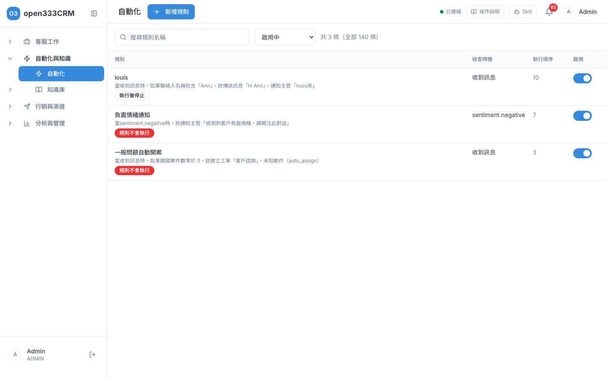
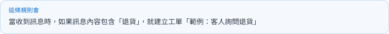
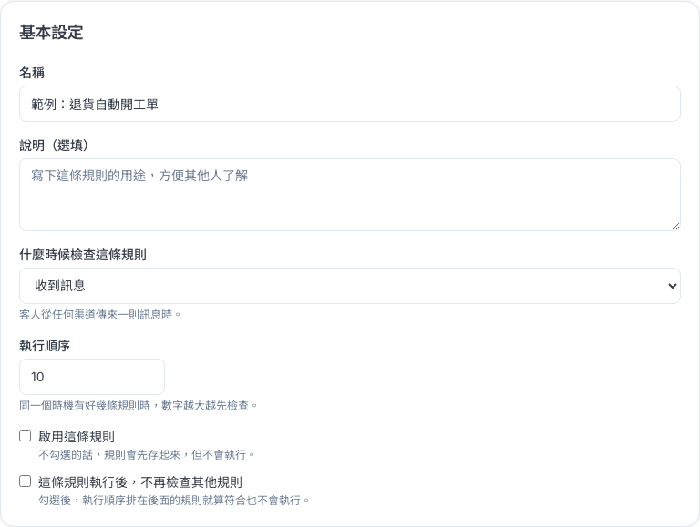
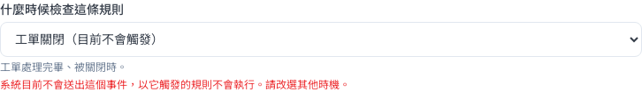
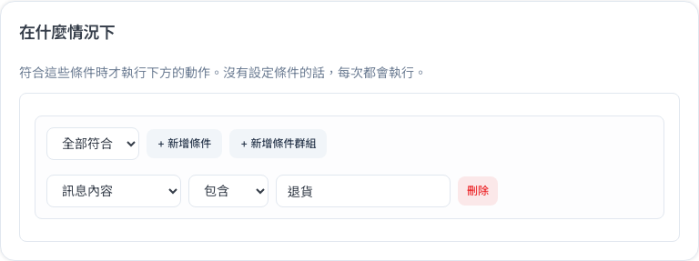
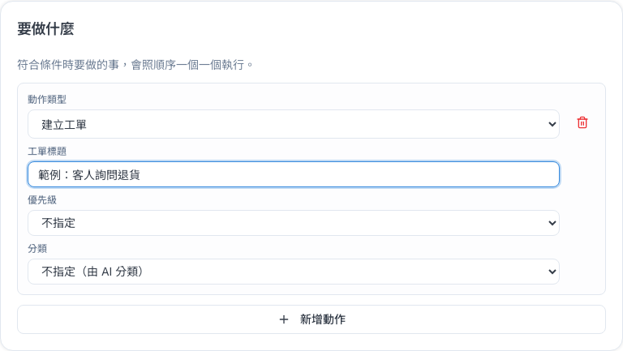
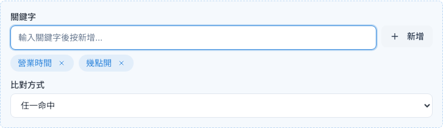
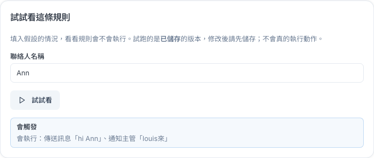

自動化
把每天重複做的事交給系統：客人提到退貨就自動開工單、問營業時間就自動回覆、VIP 的工單快逾期就通知主管。
1 這頁能做什麼
每一條自動化規則，都可以用一句話說完：
規則編輯頁的三塊卡片剛好對應這三段：「什麼時候檢查這條規則」是當、「在什麼情況下」是如果、「要做什麼」是就。最上方的「這條規則會」也會用一句白話幫你把規則唸出來，寫完對照一下就知道有沒有設對。
2 規則列表
側欄點「自動化與知識 → 自動化」，會列出所有規則。

- 用「搜尋規則名稱」找規則，用右邊的下拉選「全部狀態」「啟用中」「已停用」。
- 滑鼠移到規則的摘要上，可以看到完整摘要與說明。
- 點「啟用」欄的開關，就能直接啟用或停用，不用進編輯頁。
- 點任一列進入編輯。
| 欄位或標記 | 意思 |
|---|---|
| 規則 | 名稱，以及一句話說明這條規則在做什麼 |
| 檢查時機 | 規則在什麼時候被檢查（見第 4 節） |
| 執行順序 | 同一個時機有好幾條規則時，數字越大越先檢查 |
| 啟用 | 開關打開（藍色）才會執行 |
| 規則不會執行 | 規則裡有系統不認得的時機或動作，整條會被跳過，也不能被啟用。滑鼠移上去會說明原因，請進去修正 |
| 執行後停止 | 這條規則執行後，不再檢查後面的規則 |
3 新增一條規則
以「客人提到退貨，就自動開工單」為例，帶你走一次。
- 在規則列表按右上角「新增規則」。
- 在「基本設定」填「名稱」，例如「退貨自動開工單」。可以在「說明（選填）」寫用途，方便同事了解。
- 當：在「什麼時候檢查這條規則」選「收到訊息」。
- 如果：在「在什麼情況下」按「+ 新增條件」，依序選「訊息內容」「包含」，再輸入「退貨」。
- 就：在「要做什麼」按「新增動作」，「動作類型」選「建立工單」，「工單標題」填「客人詢問退貨」。
- 看一下最上方的「這條規則會」，確認那句話跟你想的一樣。
- 要馬上生效就勾「啟用這條規則」，然後按右下角「儲存規則」。不想存就按「取消」。


| 欄位 | 必填 | 說明 |
|---|---|---|
| 名稱 | 是 | 沒填名稱時「儲存規則」按不下去。最多 200 字 |
| 說明（選填） | 寫給同事看的用途說明，最多 1000 字 | |
| 什麼時候檢查這條規則 | 是 | 規則的「當」，見第 4 節 |
| 執行順序 | 預設 10。請填 0 到 10000 之間的整數，數字越大越先檢查 | |
| 啟用這條規則 | 新增時預設不勾。不勾的話規則會先存起來，但不會執行 | |
| 這條規則執行後，不再檢查其他規則 | 勾選後，執行順序排在後面的規則就算符合也不會執行（關鍵字規則例外，見第 7 節） | |
| 要做什麼 | 是 | 至少要加一個動作才能儲存 |
4 「當」：什麼時候檢查
選好時機後，下方會用一句話說明這個時機是什麼。選的時機也會決定後面能用哪些條件和動作，例如「收到訊息」可以回覆客人，但沒辦法改工單狀態，因為這時還沒有工單。
| 選單上的名稱 | 什麼時候會觸發 | 會不會觸發 |
|---|---|---|
| 收到訊息 | 客人從任何渠道傳來一則訊息時 | 會 |
| 關鍵字命中 | 客人的訊息含有你設定的關鍵字時（見第 7 節） | 會 |
| 新對話建立 | 有客人第一次傳訊息、開啟新對話時 | 會 |
| 工單建立 | 建立新工單時，不論是客服手動建立或規則自動建立 | 會 |
| 工單升級 | 工單被升級、需要主管處理時 | 會 |
| 聯繫人建立 | 系統新增一位聯絡人時 | 會 |
| 聯繫人加標籤 | 聯絡人被貼上標籤時 | 會 |
| 短連結被點擊 | 聯絡人點了你發出的短連結時 | 會 |
| SLA - 首次回應即將逾期／已逾期 | 工單的首次回應期限快到了或過了，客服還沒回覆時 | 會 |
| SLA - 解決期限即將逾期／已逾期 | 工單的解決期限快到了或過了，還沒解決時 | 會 |
| SLA - 客戶等待已逾期 | 客人等客服回覆的時間超過 SLA 設定時 | 會 |
| 收到 Postback | 客人點了 LINE 訊息上的按鈕時 | 目前不會觸發 |
| 工單更新 | 工單內容被修改時 | 目前不會觸發 |
| 工單關閉 | 工單被關閉時 | 目前不會觸發 |
| 工單狀態變更 | 工單狀態改變時 | 目前不會觸發 |
| 工單指派 | 工單被指派給客服時 | 目前不會觸發 |
| 聯繫人更新 | 聯絡人資料被修改時 | 目前不會觸發 |

舊規則如果用了系統已經沒有的時機，打開編輯頁時「什麼時候檢查這條規則」會顯示「未知觸發事件（…）」，下方紅字寫「系統沒有這個觸發事件，這條規則不會執行」。請改選一個上表的時機再儲存。
5 「如果」：在什麼情況下
條件決定規則什麼時候真的要動手。沒有設定條件的話，每次都會執行。

- 按「+ 新增條件」，依序選欄位（例如「訊息內容」）、比較方式（例如「包含」），再填比較值。
- 有好幾條條件時，用最前面的下拉選「全部符合」（每一條都要成立）或「任一符合」（成立一條就好）。
- 想要更複雜的組合，例如「（A 而且 B）或 C」，按「+ 新增條件群組」，在群組裡另外設定全部或任一符合。
- 不要的條件按「刪除」。
常用的條件欄位
能選哪些欄位，要看你選的時機。例如只有 SLA 類時機才有 SLA 相關欄位。
| 欄位 | 可以拿來做什麼 |
|---|---|
| 訊息內容 | 客人這則訊息寫了什麼，例如「包含 退貨」 |
| 聯絡人標籤 | 客人身上有沒有某個標籤 |
| 聯絡人是 VIP | 客人有沒有大寫「VIP」標籤（見「03 · 聯絡人」） |
| 對話渠道、聯絡人渠道 | 客人從 LINE、Facebook 或 WebChat 來 |
| 對話狀態 | 對話是進行中、等待中或已關閉 |
| 開啟案件數 | 客人目前有幾張還沒結案的工單 |
| 案件狀態、案件優先級、案件分類 | 工單的狀態、優先級、分類（「案件」就是「工單」） |
| SLA 剩餘分鐘、最新情緒、負面情緒次數等 | 只有 SLA 類時機可以用 |
「對話負責客服 ID」「負責客服 ID」「團隊 ID」「案件 ID」要貼系統內部的代碼，一般使用時建議不要用這幾個欄位。
「最新情緒」「負面情緒次數」只有 SLA 類時機能用，在「收到訊息」時沒辦法依客人情緒判斷。
6 「就」：要做什麼
一條規則可以有好幾個動作，會照順序一個一個執行。按「新增動作」加一個，選「動作類型」後再填下面的欄位；不要的動作按右邊的垃圾桶。換動作類型時，已經填的內容會清空。

| 動作 | 會做什麼 | 要填什麼 | 什麼時機能用 |
|---|---|---|---|
| 傳送訊息 | 自動回一則文字給客人 | 訊息內容 | 收到訊息、關鍵字命中、新對話建立 |
| 傳送素材 | 自動回一則素材庫裡的素材（圖文、Flex 等） | 素材（從素材庫下拉選） | 同上 |
| 建立工單 | 幫這段對話開一張工單 | 工單標題；優先級、分類可選「不指定」（分類不指定時由 AI 分類） | 同上。這段對話已經有還沒結案的工單時，不會再開新的 |
| 更新工單狀態 | 把工單改成開啟、處理中、已升級、已解決或已關閉 | 目標狀態 | 工單類與 SLA 類時機 |
| 升級工單 | 提高工單的優先級 | 新優先級（不指定時自動升一級） | 工單類與 SLA 類時機 |
| 設定工單優先級 | 把工單改成指定的優先級 | 優先級 | 工單類與 SLA 類時機 |
| 新增標籤 | 幫客人貼標籤，標籤不存在時會自動建立 | 標籤名稱 | 有聯絡人的時機（SLA 類除外，見下方） |
| 移除標籤 | 把客人身上的標籤拿掉 | 標籤名稱 | 同上 |
| 指派客服 | 把工單指派給某位客服 | 指派給（從名單選人） | 工單類與 SLA 類時機 |
| 傳送通知 | 發一則站內通知給指定的同事，沒指定時自動找負責的人（見下方） | 通知訊息；「通知誰」可選可不選 | 所有時機 |
| 通知主管 | 發一則站內通知給所有主管與管理員 | 通知訊息 | 所有時機 |
「傳送通知」會送給誰
「通知誰」可以從名單挑一位客服；不挑的話，系統會照下面的順序找第一個有人的對象：
- 你在「通知誰」指定的客服。
- 工單的負責人。
- 對話的負責客服。
- 以上都沒有時，通知所有主管與管理員。
所以在「收到訊息」「新對話建立」這類還沒有工單的時機也能用。通知送到後，標題是「自動化規則通知」，你寫的內容在標題下面那一行。
「更新工單狀態」的目標狀態、「設定工單優先級」的優先級是必填，剛加入動作時會顯示「請選擇…」，記得選好再儲存。
「升級工單」目前只會提高優先級，工單狀態不會變成「已升級」，「升級原因」也不會被記下來。需要正式升級並留下原因，請在工單頁手動按「升級」（見「02 · 工單」）。
「傳送訊息」目前只能打一行，不能換行。
7 關鍵字自動回覆與 AI
客人常問的固定問題（營業時間、地址、退貨流程），可以用關鍵字規則自動回答，答案每次都一樣、不會講錯。
- 新增規則，「什麼時候檢查這條規則」選「關鍵字命中」，下方會出現虛線框。
- 在「輸入關鍵字後按新增...」打一個關鍵字，按 Enter 或「新增」。可以加好幾個，點關鍵字旁的「×」移除。
- 「比對方式」選「任一命中」（訊息含其中一個就算）或「全部命中」（每個都要有才算）。
- 「要做什麼」加一個「傳送訊息」，寫好要回的內容。
- 勾「啟用這條規則」後儲存。

關鍵字規則和 AI 自動回覆怎麼分工
如果你的渠道也開了 AI 自動回覆，一則訊息會不會被回兩次？規則是這樣：
| 情況 | 誰回覆客人 |
|---|---|
| 訊息命中一條啟用中的關鍵字規則，而且這條規則會「傳送訊息」或「傳送素材」 | 關鍵字規則回覆，AI 讓開不回，客人只會收到一則 |
| 命中的關鍵字規則只做「新增標籤」「建立工單」這類不回覆客人的事 | AI 照常回覆，規則也照常執行 |
| 沒有命中任何關鍵字 | AI 照常回覆 |
這個讓步只發生在 LINE、Facebook、Instagram。網站聊天視窗（WebChat）的關鍵字規則目前送不出回覆，WebChat 的客人請交給 AI 或客服回答。
如果關鍵字規則另外加了「在什麼情況下」的條件（例如「對話渠道 等於 LINE」），系統會連條件一起判斷：條件不成立時，規則不執行，AI 照常回覆，客人不會沒人理。
客服接手對話後，關鍵字規則仍然會自動回覆。如果你正在跟客人對話，客人又打到關鍵字，他會同時收到自動回覆。
8 試試看這條規則
規則儲存後，編輯頁下方會出現「試試看這條規則」。填入假設的情況，就能知道規則會不會觸發、會做哪些事，不會真的執行動作，可以放心試。

- 先按「儲存規則」。試跑的是已儲存的版本，改過沒存的不算。
- 依畫面上列出的條件欄位填值。可以填好幾個值的欄位，用「、」分開。
- 按「試試看」，看結果和「會執行：…」那一行。
9 停用與刪除
| 做法 | 結果 | 什麼時候用 |
|---|---|---|
| 在列表把「啟用」開關關掉，或在編輯頁取消勾選「啟用這條規則」再儲存 | 規則留著，只是不執行，隨時可以再打開 | 活動暫停、想先觀察 |
| 在編輯頁按左下角「刪除規則」，確認後回到列表 | 規則從列表消失，無法從畫面復原 | 確定以後都不用了 |